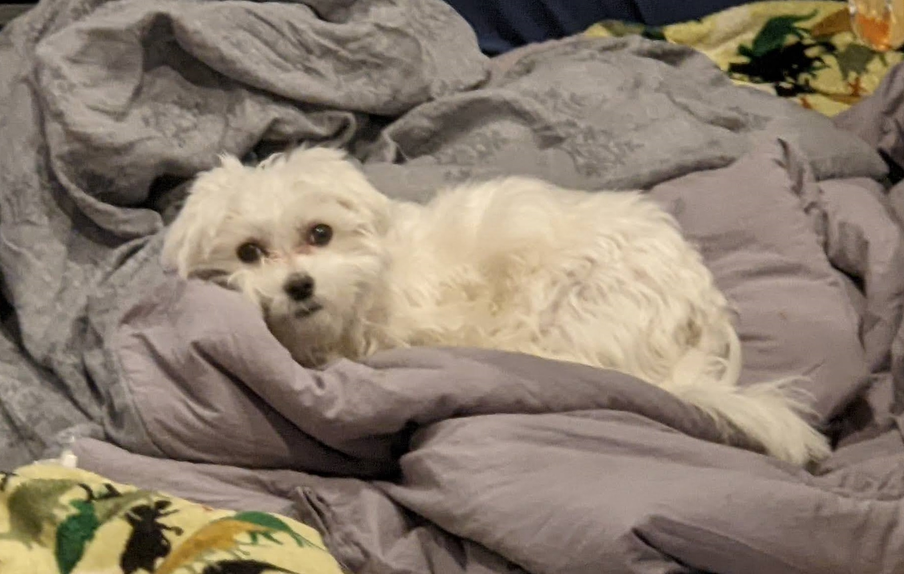
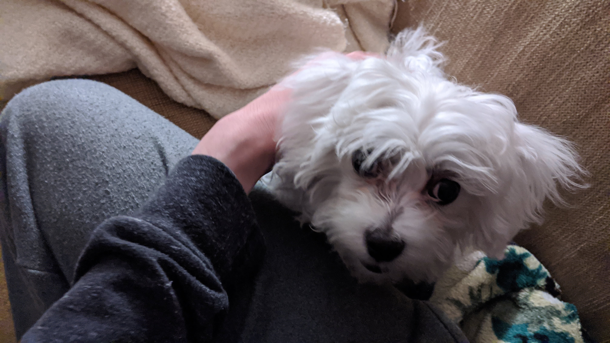
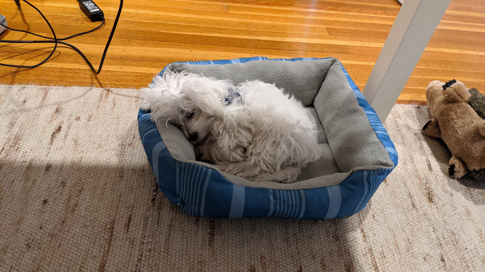

© Timothy Retelle 2022
© Timothy Retelle 2022

This is my dog Wesley. He's a little over one year old, and very small. He barks a lot but we still love him anyway. He likes to sleep on this giant comforter in my Mom's office while she works.

This picture is from the day we adopted him, on May 24th 2021. He's a purebred Maltese, which are normally very expensive, but we got him on craigslist from someone who bought him but wasn't prepared for the responsibility of owning a puppy.

Wesley often likes to sleep under my desk during classes or when I'm doing schoolwork. Sometimes he gets a bit restless and needs to go downstairs, but usually he's good!
This table lists the dogs I have had in my life before Wesley, and when.
| Name | Year | Name | Year |
|---|---|---|---|
| Buddy | 1997-2014 | Tucker | 2010-2013 |
| Surge | 2016-Present | Mercy | 2016-Present |